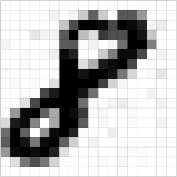
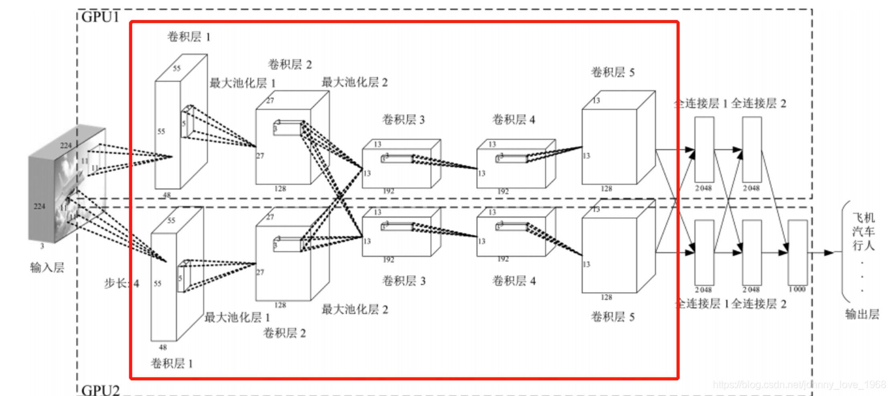

卷积神经网络（CNN）
卷积神经网络（CNN）的原理
引言：
可查看前篇文章——神经网络：构建人工智能的基石
卷积神经网络（Convolutional Neural Network，CNN）是一种在计算机视觉领域取得了巨大成功的深度学习模型。它们的设计灵感来自于生物学中的视觉系统，旨在模拟人类视觉处理的方式。在过去的几年中，CNN已经在图像识别、目标检测、图像生成和许多其他领域取得了显著的进展，成为了计算机视觉和深度学习研究的重要组成部分。
一、图像原理
在了解卷积神经网络前，我们先来看看图像的原理：
图像在计算机中是一堆按顺序排列的数字，数值为0到255。0表示最暗，255表示最亮。 如下图：

上图是只有黑白颜色的灰度图，而更普遍的图片表达方式是RGB颜色模型，即红、绿、蓝三原色的色光以不同的比例相加，以产生多种多样的色光。RGB颜色模型中，单个矩阵就扩展成了有序排列的三个矩阵，也可以用三维张量去理解。
其中的每一个矩阵又叫这个图片的一个channel（通道），宽, 高, 深来描述。
二、为什么要学习卷积神经网络？
在传统神经网络中，我们要识别下图红色框中的图像时，我们很可能识别不出来，因为这六张图的位置都不同，计算机无法分辨出他们其实是一种形状或物体。
传统神经网络原理如下图：
我们希望一个物体不管在画面左侧还是右侧，都会被识别为同一物体，这一特点就是不变性。为了实现平移不变性，卷积神经网络（CNN）等深度学习模型在卷积层中使用了卷积操作，这个操作可以捕捉到图像中的局部特征而不受其位置的影响。
三、什么是卷积？
在卷积神经网络中，卷积操作是指将一个可移动的小窗口（称为数据窗口，如下图绿色矩形）与图像进行逐元素相乘然后相加的操作。这个小窗口其实是一组固定的权重，它可以被看作是一个特定的滤波器（filter）或卷积核。这个操作的名称“卷积”，源自于这种元素级相乘和求和的过程。这一操作是卷积神经网络名字的来源。
上图这个绿色小窗就是数据窗口。简而言之，卷积操作就是用一个可移动的小窗口来提取图像中的特征，这个小窗口包含了一组特定的权重，通过与图像的不同位置进行卷积操作，网络能够学习并捕捉到不同特征的信息。文字解释可能太难懂，下面直接上动图：

这张图中蓝色的框就是指一个数据窗口，红色框为卷积核（滤波器），最后得到的绿色方形就是卷积的结果（数据窗口中的数据与卷积核逐个元素相乘再求和）
一张图带你了解卷积计算过程：
卷积需要注意哪些问题？
a. 步长stride：每次滑动的位置步长。
b. 卷积核的个数：决定输出的depth厚度。同时代表卷积核的个数。
c. 填充值zero-padding：在外围边缘补充若干圈0，方便从初始位置以步长为单位可以刚好滑倒末尾位置，通俗地讲就是为了总长能被步长整除。
以上图为例，那么：
- 数据窗口每次移动两个步长取 3*3 的局部数据，即 stride=2 。
- 两个神经元，即 depth=2 ，意味着有两个滤波
- zero-padding=1 。
为什么要进行数据填充：
假设有一个大小为 4x4 的输入图像：
1 | [[1, 2, 3, 4 ], |
现在，我们要应用一个 3x3 的卷积核进行卷积操作，步幅（stride）为 1，且要使用填充（padding）为 1。如果不使用填充，卷积核的中心将无法对齐到输入图像的边缘，导致输出特征图尺寸变小。假设我们使用步幅（stride）为 1 进行卷积，那么在不使用填充的情况下，输出特征图的尺寸将是 2x2。
所以我们要在它的周围填充一圈0，填充为 1 意味着在输入图像的周围添加一圈零值。添加填充后的图像：
1 | [[0, 0, 0, 0, 0, 0], |
现在，我们将 3x3 的卷积核应用于这个填充后的输入图像，计算卷积结果，得到大小不变的特征图。
数据填充的主要目的是确保卷积核能够覆盖输入图像的边缘区域，同时保持输出特征图的大小。这对于在CNN中保留空间信息和有效处理图像边缘信息非常重要。
卷积神经网络的模型是什么样的？
上面红框框起来的部分便可以理解为一个滤波器，即带着一组固定权重的神经元。多个滤波器叠加便成了卷积层。
四、卷积神经网络的构造

输入层
输入层接收原始图像数据。图像通常由三个颜色通道（红、绿、蓝）组成，形成一个二维矩阵，表示像素的强度值。卷积和激活
卷积层将输入图像与卷积核进行卷积操作。然后，通过应用激活函数（如ReLU）来引入非线性。这一步使网络能够学习复杂的特征。池化层
池化层通过减小特征图的大小来减少计算复杂性。它通过选择池化窗口内的最大值或平均值来实现。这有助于提取最重要的特征。多层堆叠
CNN通常由多个卷积和池化层的堆叠组成，以逐渐提取更高级别的特征。深层次的特征可以表示更复杂的模式。全连接和输出
最后，全连接层将提取的特征映射转化为网络的最终输出。这可以是一个分类标签、回归值或其他任务的结果。
形象的过程如下图：
展开形式 |
未展开形式 |
五、图片经过卷积后的样子
与人眼观看事物原理相似，卷积神经网络可以看到事物的轮廓